← Índice de los 69 tutes de IDA
Tute 8 · Trabajar en el loader
▶ video afín (mismo autor, en x64dbg): «15 Ejercicio 2 - Análisis estático» · se conecta con: Herramientas · IDA · Instrucciones · Flujo · Debugger · Números
INTRODUCCIÓN AL REVERSING CON IDA PRO DESDE CERO PARTE 8.
EL LOADER
Ya hemos visto a vuelo de pájaro las principales instrucciones ahora sigamos con el LOADER.
La forma de trabajar cuando uno no tiene mucha practica con reversing estático es ir comentando y renombrando algunas pocas cosas que podemos darnos cuenta y la mayor parte del trabajo hacerlo debuggeando. A medida que uno va teniendo más practica con el reversing estático puede lograr más y más reversing casi sin debuggear o a veces sin debuggear.
Normalmente y dado lo extenso de los programas, uno no los va a reversear completamente sino una o varias funciones de alguna zona que necesita entender para algún propósito.
IDA es una herramienta que nos proporciona la posibilidad que interactuemos de forma de obtener los mejores resultados de reversing como ninguna tool, pero dependerá el resultado de la capacidad de reversing del que la usa.
La famosa frase “No es culpa de la flecha sino del indio”, aquí se aplica completamente es necesario practicar y mejorar en el uso del IDA, si fallamos o no obtenemos un buen resultado debemos mejorar nuestro nivel y practicar más y más, no es una herramienta sencilla y tiene miles y miles de posibilidades lo cual hace que todos los días podamos aprender cosas nuevas cuando la usamos.
Vamos a comenzar a mirar estáticamente el CRACKME DE CRUEHEAD no importa si llegamos hasta la solución o si es necesario finalmente terminarlo cuando lleguemos a la parte de DEBUGGER, lo importante es acostumbrarse a jugar con el LOADER e ir mejorando nuestra confianza con el mismo.
Si vamos a VIEW-OPEN SUBVIEW-SEGMENTS veremos los segmentos que carga el LOADER en forma automática.
Vemos que por ejemplo el HEADER que estaría en 0x400000 antes de las secciones, no está cargado ya que en las opciones cuando carga por primera vez al dar todo OK carga automáticamente solo algunas secciones del ejecutable sin el HEADER.
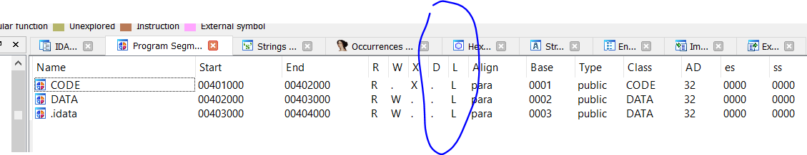
Vemos que luego del NOMBRE de la sección, están las direcciones de inicio START y final de la misma END, luego las columnas RWX me dicen si tiene inicialmente permiso de lectura o READ(R), de escritura o WRITE(W) y de ejecución(X).
Luego vemos dos columnas con los nombres D y L que corresponden a DEBUGGER y LOADER, vemos que la de DEBUGGER esta vacía pues se llama cuando cargamos el programa en modo DEBUGGER y nos muestra los segmentos cargados en el mismo y L nos muestra los que carga el LOADER y luego algunas otras columnas mas no tan importantes.
En este caso no tiene mayor importancia cargar el header, ya vimos en la parte anterior que cuando renombramos una instrucción y le pusimos un salto a 0x400000 nos la marco en rojo como una dirección que no está cargada en el LOADER.
Si quisiera cargar el HEADER lo vuelvo a abrir el CRACKME.exe
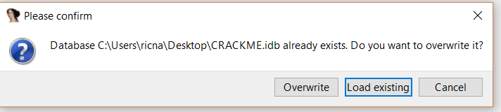
Le pongo que sobrescriba o OVERWRITE todo el análisis anterior y me haga uno nuevo.
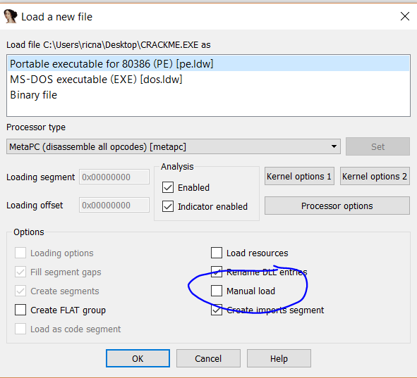
Le pongo la tilde a MANUEL LOAD y al dar OK
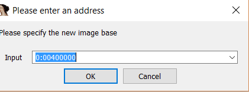
Me pregunta si quiero manualmente cambiar la BASE de donde se cargará el ejecutable le doy OK con el valor que trae.
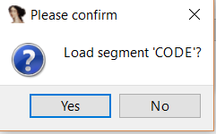
Y me preguntara manualmente uno por uno que segmentos quiero cargar a todos le doy YES.
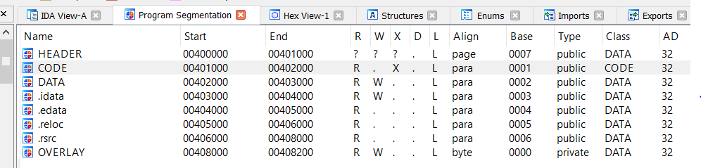
Y ahí tengo cargado en el LOADER todas las secciones incluso el HEADER y varias más de DATOS.
Esto normalmente no es necesario hacerlo, pero es bueno tenerlo en cuenta.
Ahora guardare un SNAPSHOT con FILE-TAKE DATABASE SNAPSHOT y cambiare un salto a JMP 0x400000 como antes.
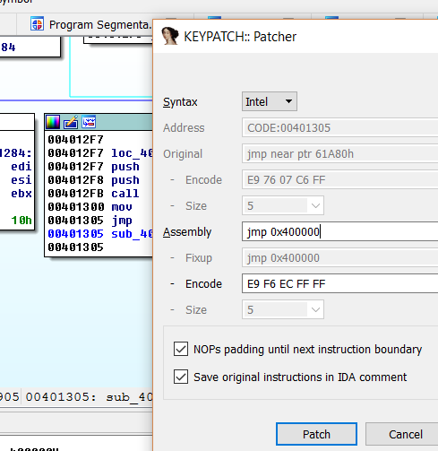
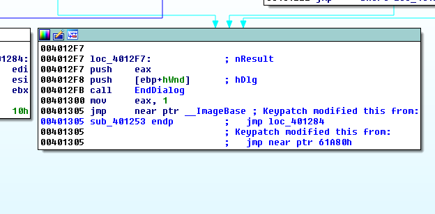
Vemos que ya no sale la dirección 0x400000 en rojo y nos pone allí que es la ImageBase, incluso podemos ir a ver allí clikeando en el nombre ImageBase.
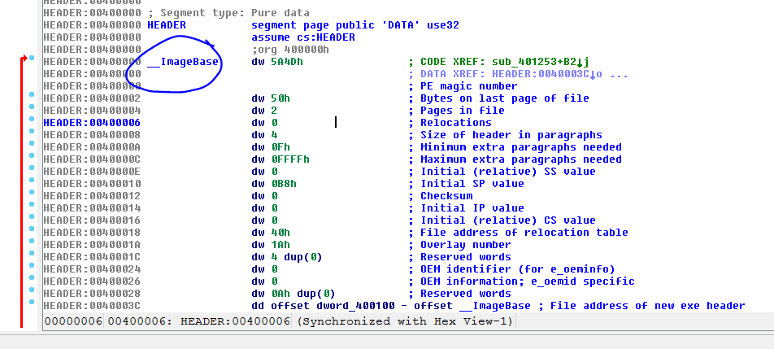
Allí vemos entonces el header en 0x400000 con su tag ImageBase y el contenido que es detectado como header y mostrado con sus campos.
Bueno volvamos el snapshot anterior antes de romper todo con VIEW-DATABASE SNAPSHOT MANAGER y le damos a RESTORE.
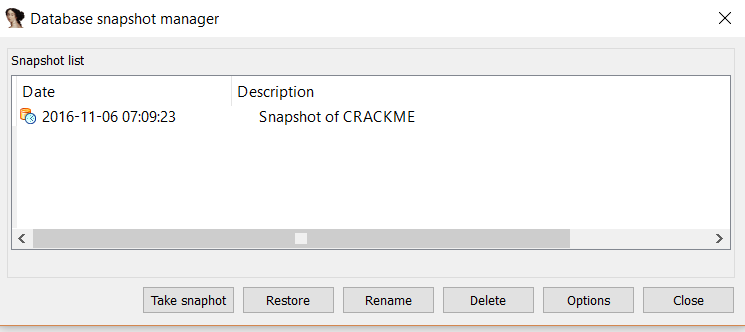
Por supuesto en todo ejercicio de cracking o reversing las strings cumplen un papel primordial para guiarnos a zonas importantes, si las hay nos pueden ayudar, veamos en VIEW-OPEN SUBVIEW-STRING que vemos.
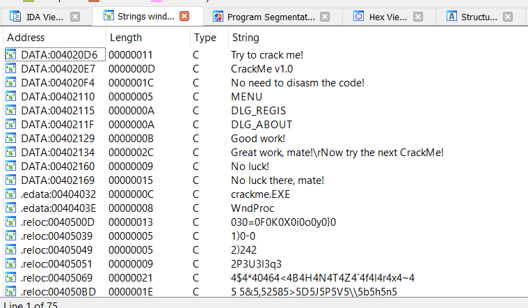
Ahora como hay más secciones, hay más strings detectadas que antes, igual si corremos suelto el crackme.exe fuera de IDA vemos en el HELP hay una opción REGISTER y nos pide un user y pass y si ponemos cualquiera, nos sale el cartel NO LUCK THERE, MATE!.
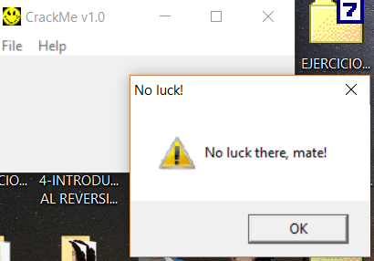
Buscamos esa string en el IDA en la lista.
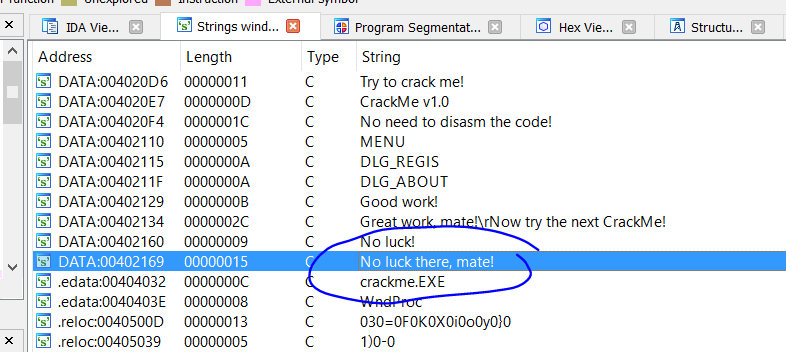
Si hacemos doble click en la string
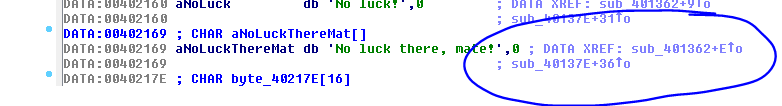
Vemos 0x402169 cuyo contenido es la string esa, sabemos que si apretamos D en la dirección esta se verán los bytes sueltos de la string.
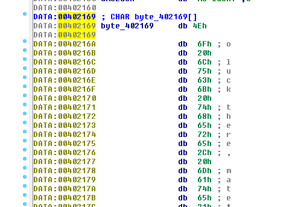
Y si, apretemos A en la dirección así vuelve como antes y apretó X para ver las dos referencias que muestra a la derecha con más comodidad.
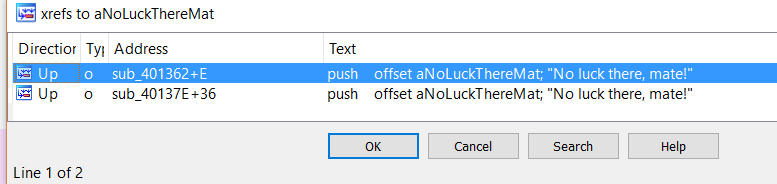
Vemos que desde dos funciones diferentes es llamada dicha string, una es sub_401362 y la otra es sub_40137E y que ambas están más arriba de la dirección donde estamos por eso en la columna DIRECTION nos muestra en ambas UP.
Sabemos que son dos funciones diferentes porque ida nos muestra las direcciones de las referencias como función más XXXX y si fueran en la misma función debería cambiar el XXXX pero mantenerse la misma primera parte aquí ambos sub_ son distintos por eso diferentes funciones.
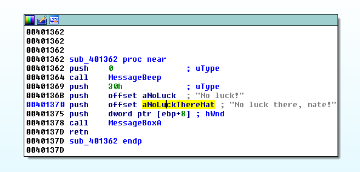
Esta es la primera referencia y abajo la segunda.
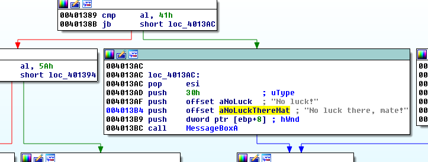
Tenemos las zonas donde nos tirara el cartel malo cuando ponemos user y password equivocados, como vamos a tratar de llegar lo más lejos posible sin debuggear si alguien quiere ayudarse por ahora y chequearlo en OLLYDBG debuggeando no hay problema pueden poner un breakpoint en ambas direcciones y ver si para cuando ponemos una clave que no es correcta, por ahora ayudarse en los comienzos suele ser útil, la idea es poco a poco necesitar cada vez menos de esas ayudas a medida que nos afianzamos con IDA, igualmente podríamos poner un breakpoint en ambos bloques aquí en IDA y ver si para de la misma forma usando el DEBUGGER de IDA pero para ir transicionando creo que mejor eso dejarlo para más adelante.
Tomemos la primera de las dos referencias

Vemos que es un llamado a la api MessageBox que es la que saca esos cartelitos como el de NO LUCK THERE MATE y le está pasando como argumento las strings NO LUCK para el título de la ventanita y NO LUCK THERE MATE como el texto de la misma.
Vemos que en la otra referencia es exactamente igual, quiere decir que el cartel de chico malo se puede disparar desde dos lugares diferentes posiblemente evaluando diferentes cosas, y para que salga el cartel de chico bueno habrá que evitar ambas.
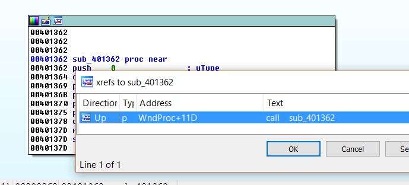
Si vemos las referencias a 0x401362 con la X, vemos un solo lugar antes de ir allí renombremos la función 0x401362 con un nombre que nos diga algo de lo que hace, por ejemplo CARTEL_ERROR.
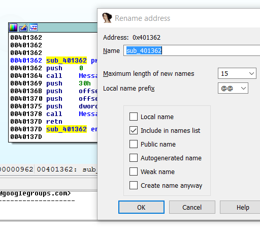
Apretando la N en la dirección ahí escribimos nuestro nuevo nombre.
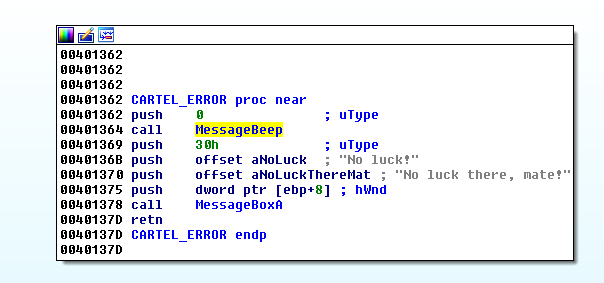
Ahora si vayamos a la referencia.
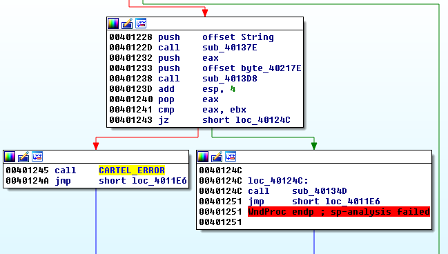
Allí vemos el bloque que nos lleva a CARTEL_ERROR y antes una decisión que toma el programa, antes que nada, como yo al reversear quiero ver las cosas de un solo golpe de vista a los bloques de error o malos, los pinto de algo parecido al rojo para que resalten.
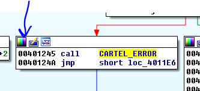
Allí está el icono para cambiar el color, muchos dirán esto no es necesario, pero en funciones complejas tener las cosas resaltadas es muy importante.
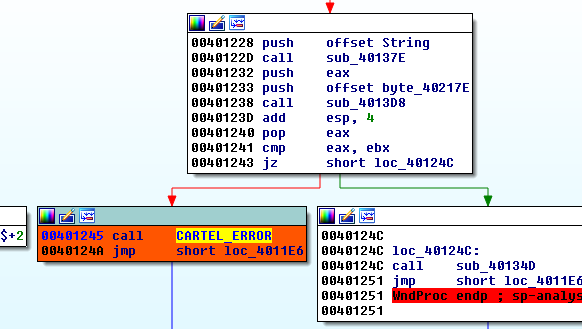
Y allí hay un salto condicional por ahora como recién comenzamos no evaluaremos porque salta a un bloque o al otro, pero miremos dentro del bloque de 0x40124c entrando a ese call 0x40134d con ENTER.
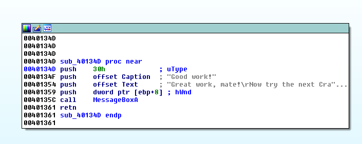
Allí vemos unas posibles strings de chico bueno que también estaban en la lista de strings, pero como el cartel de error que aparecía, nos daba la string de error, creíamos que era mejor empezar por ahí pues esta podía ser una string falsa de chico bueno, pero como vemos que el programa decide venir aquí o a la zona de chico malo, vemos que es muy posible que sea la correcta.
A esta función la renombramos como CARTEL_BUENO.
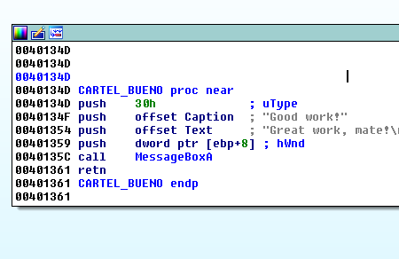
En la referencia pintamos el bloque que nos lleva aquí de verde.
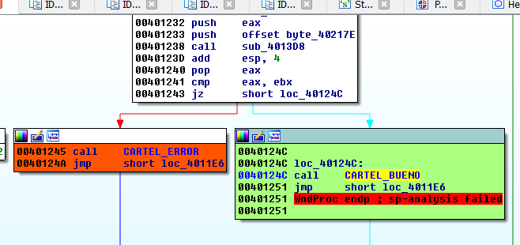
Y también como vamos a trabajar por otras partes del programa para poder volver fácilmente aquí, nos ubicamos en el JZ de 0x401243 y vamos a JUMP-MARK POSITION y le ponemos un nombre que nos guie como DECISION_FINAL.
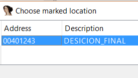
Vemos que entonces en JUMP-JUMP TO MARKED POSITION nos aparece la lista de marcas que hicimos y podemos ir a la que queramos por si nos perdemos en el programa.
Quiere decir que teóricamente si parcheáramos ese JZ y lo cambiáramos por un JNZ aun siendo invalido nos llevaría a GOOD WORK, siempre y cuando el anterior cartel de error no nos tire fuera veamos.
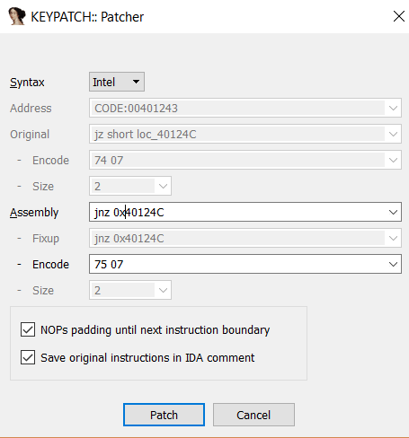
Lo cambio con el KEYPATCH.
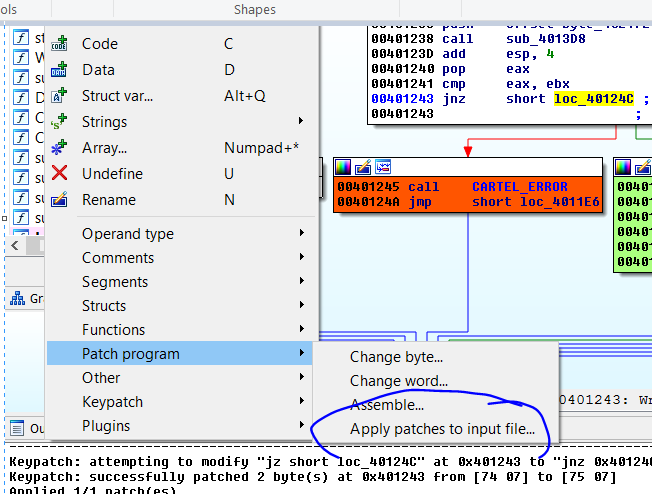
Y guardo los cambios con APPLY PATCH TO INPUT FILE.
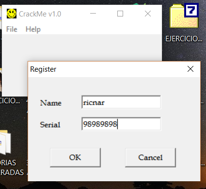
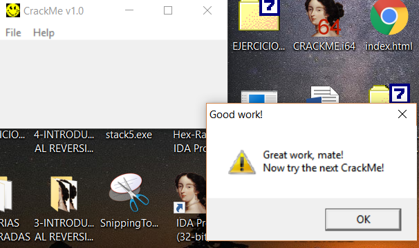
Vemos que lo parcheamos, pero en qué caso saldrá el otro cartel de error que falta parchear.
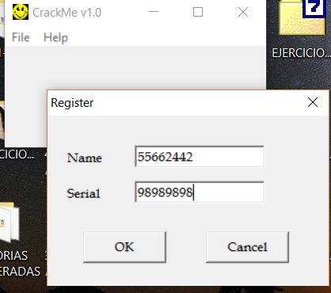
Si ponemos esto vemos que salen los dos primero el cartel de error y luego el de chico bueno, veamos si podemos parchear el otro cartel de error.
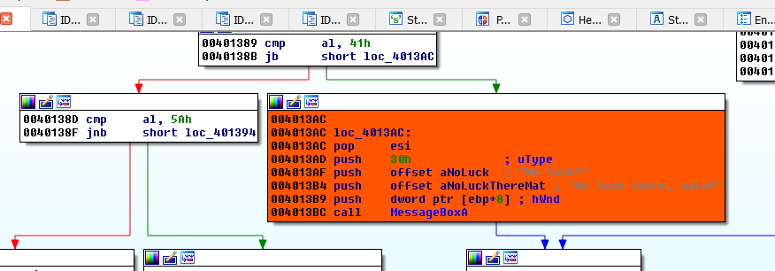
Vemos ahí el otro cartel de error que lo pinte de rojo más adelante analizaremos completamente este crackme pero es obvio que compara contra 41 que es la A en ASCII y si es más bajo (JB) te tira al error, así que si vemos que yo en el ultimo intento puse números en vez de letras en mi nombre, obviamente los números tienen caracteres ASCII mas bajos que 41 (cero es 30, uno es 31, etc) por lo tanto cuando detecta que en el nombre hay números te saca el cartel de error, así que parchearemos esto (aquí no podemos cambiar JB por JNB porque si no nos tirara el error al poner las letras en el nombre ya que se invertirá).
Si con la barra espaciadora lo quitamos de modo grafico
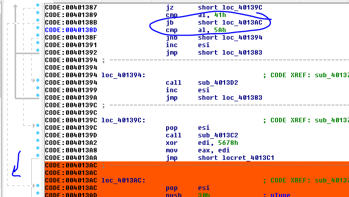
Vemos que saltara para llegar al cartel de error, la línea punteada a la izquierda me muestra el salto, así que si lo nopeo no saltara y seguirá con la próxima instrucción sin venir aquí.
Volviendo al gráfico.
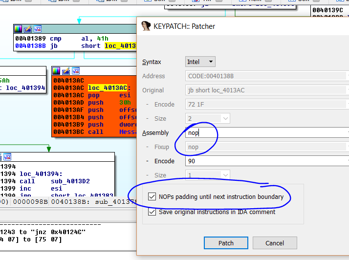
Vemos que rellenará con 90 hasta la siguiente instrucción así que no se romperá, creo jeje.
Quedo bien, pero los bloques se me desordenaron y me quedo feo a la vista, así que hago click derecho-LAYOUT GRAPH y lo acomodara.
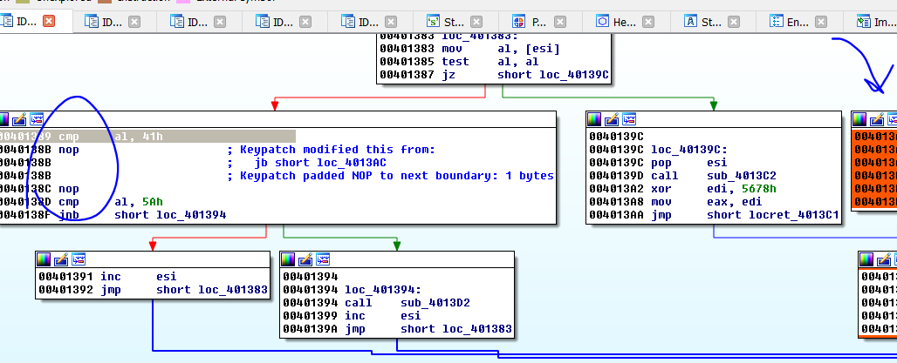
Vemos que allí están los nops y el bloque de error me quedo aislado y no se puede llegar allí mas.
Guardo los cambios de la misma forma que antes.
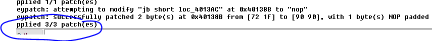
Vemos si ahora acepta cualquier cosa.
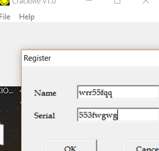
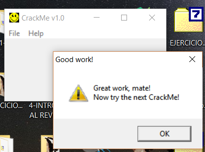
Bueno este es un inicio obviamente solo parcheamos para ir tomando contacto con el reversing estático más adelante veremos cómo reversearlo completo y hacer un keygen pero eso será unos capítulos más adelante por ahora vamos despacio y vemos esto.
Hasta la parte 9
Ricardo Narvaja